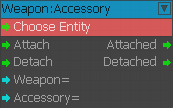
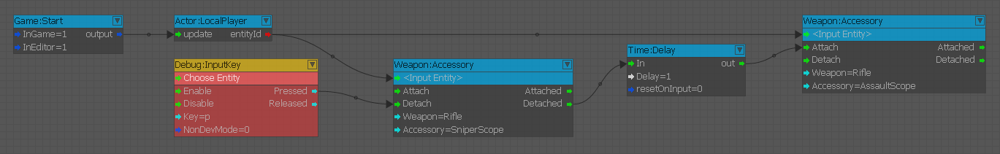
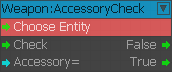
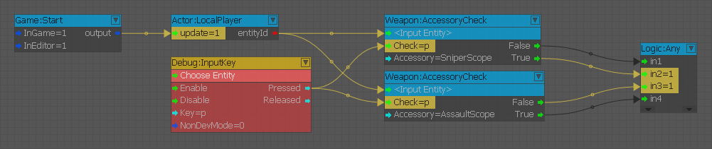
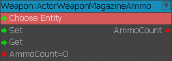
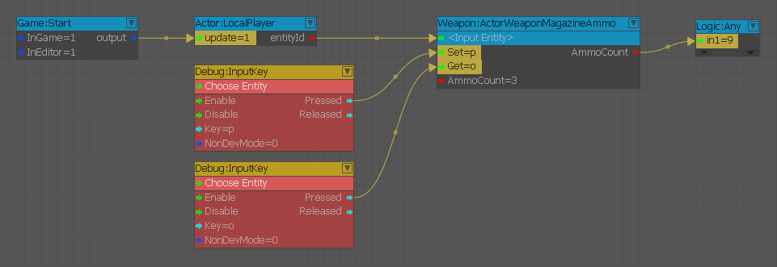
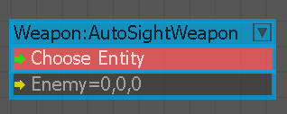

Accessory
Attach/Detach [Accessory] from Actor's weapon [Weapon]. Both must be in the Inventory.

In this example, we're pressing 'P' to detach the currently equipped SniperScope from the player's Rifle and then after a short delay, attaching the AssaultScope accessory.

AccessoryCheck
Checks if target actor's current weapon has [Accessory] attached.

In this example, we're checking which Scope the player's current weapon has attached. In this case, it's the SniperScope stating 'true'.

ActorWeaponMagazineAmmo
Get/Set ammo in the magazine of the current player's weapon.

In this example, we're getting the current AmmoCount with the 'O' key and it outputs '9' (only checks the current magazine, not full inventory amount).
We also set the AmmoCount amount to '3' with the 'P' key which then gives us 3 shots left in the current magazine before a reload is required.

AmmoChange
Give or Take ammo to/from a local player. Weapon and AmmoType must match [e.g. "SOCOM and "bullet"].
AutoSightWeapon
This node allows to connect the enenmy position vector to shoot here.

Inputs
| Port | Type | Description |
|---|---|---|
| Enemy | Vec3 | Aims the weapon at the enemy's position |
ChangeFireMode
Switched the weapon fire mode.
Explosion
Triggers an explosion.
ExplosionInfo
Tracks Explosions. All input conditions (ShooterId, Ammo, ImpactTargetId) must be fulfilled to output. If a condition is left empty/not connected, it is regarded as fulfilled.
FireWeapon
Fires a weapon and sets a target entity or a target position.
HitInfo
Tracks Hits on Actors. All input conditions (ShooterId, TargetId, Weapon, Ammo) must be fulfilled to output. If a condition is left empty/not connected, it is regarded as fulfilled.
ItemAction
Plays an action on an item.
Listener
Listens on [WeaponId] (or players [WeaponClass], or as fallback current players weapon) and triggers OnShoot when shot.
ZoomCheck
Checks if target actor's current weapon is zoomed.
Deprecated Nodes
- ChangeAmmo
- CheckAccessory
- CheckZoom
- WeaponListener